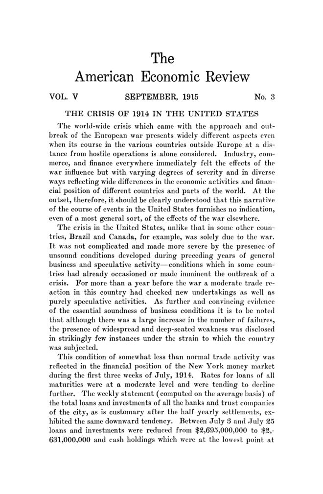

Sprague, 1915: a crise que a guerra trouxe a Nova York
Leitura: 10 min
O. M. W. Sprague reconstitui a crise americana de 1914: o colapso do câmbio, o fechamento da bolsa, as notas de emergência que evitaram o pânico e a demora em pagar o exterior em ouro.


No sábado, 25 de julho de 1914, o câmbio em Nova York ainda funcionava normalmente, com a libra à vista a US$ 4,8830, no nível em que compensava exportar ouro. No domingo, a guerra geral na Europa, até então uma possibilidade vaga, tornou-se alarmantemente provável. Na segunda-feira, a libra abriu a US$ 4,92 e o mercado de câmbio estava completamente desorganizado, em Nova York e em todos os mercados do mundo.
O. M. W. Sprague, da Harvard University, abre o número de setembro de 1915 da American Economic Review com a narrativa dessa crise. Faz uma advertência inicial: a história americana não indica nada sobre os efeitos da guerra em outros países. E uma tese: ao contrário do que ocorreu no Brasil e no Canadá, por exemplo, a crise nos Estados Unidos se deveu exclusivamente à guerra, sem condições internas doentias acumuladas em anos de especulação.
Como estava o mercado antes da guerra?
Havia mais de um ano, uma reação moderada dos negócios contivera novos empreendimentos e a especulação. Entre 3 e 25 de julho, os empréstimos e investimentos de todos os bancos e companhias fiduciárias de Nova York caíram de US$ 2,695 bilhões para US$ 2,631 bilhões, e o excesso de reservas dos bancos da câmara de compensação era de US$ 26 milhões, em proporção normal.
O câmbio seguia o padrão de verão. A libra à vista caíra de US$ 4,8820, em 23 de junho, para US$ 4,8690, em 18 de julho, não por causa de exportações, mas porque os bancos sacavam letras financeiras, isto é, tomavam empréstimos em Londres contando com o excesso de exportações do outono. A safra de trigo de inverno era recorde, e a de algodão prometia. O resultado era que Nova York estava, como em todo verão, devedora no mercado internacional de crédito de curto prazo, sem saldos no exterior para enfrentar uma demanda súbita.
Por que o câmbio parou?
Grande parte do comércio mundial e do crédito internacional de curto prazo era feita com letras sacadas contra bancos e casas de aceite de Londres. Com a guerra à vista, os aceitantes londrinos tinham a receber de clientes em países que logo seriam inimigos, e o valor do próprio aceite ficou em dúvida. Na segunda-feira, 27 de julho, Londres suspendeu ao mesmo tempo as cotações de desconto à vista e para entrega futura.
Sprague explica a consequência. Na véspera, quem comprava uma letra comercial podia descontá-la em Londres e vender câmbio à vista contra o produto; agora, comprá-la significava imobilizar capital até o vencimento num título de valor incerto. A principal fonte de câmbio à vista foi cortada. Restavam os saldos no exterior, pequenos, e o embarque de ouro: US$ 7 milhões na segunda-feira e US$ 12 milhões na terça, tudo o que as seguradoras aceitavam cobrir.
“O mecanismo complicado e delicadamente equilibrado do câmbio desmoronou como um castelo de cartas.” (“The complicated and delicately balanced mechanism of the foreign exchanges ... collapsed like a house of cards.”)
Por que fechar a bolsa?
O golpe decisivo veio das vendas de títulos por estrangeiros. Os investimentos europeus fora da Europa eram, em geral, títulos sem mercado nos países onde o capital estava aplicado; os americanos eram exceção, com um mercado amplo em Nova York. Quando os europeus quiseram converter investimentos em dinheiro, a pressão concentrou-se sobre ações e obrigações americanas. Na terça-feira, 28 de julho, foram negociadas 1.019.975 ações na bolsa, contra 474.749 na segunda.
O problema, insiste o autor, não era a quantidade, mas o fato de serem vendas de estrangeiros. Transferências maiores entre compradores e vendedores domésticos já tinham ocorrido sem dificuldade, porque os compradores tomam emprestado dos bancos sem que estes percam dinheiro. As vendas estrangeiras criavam obrigações de pagamento imediato que só podiam ser atendidas com ouro, num momento em que o país era devedor e não podia tomar novos empréstimos. Equivaliam a uma corrida aos bancos que nenhuma política de pagamentos contínuos poderia deter, porque não vinha de desconfiança.
Na quinta-feira, uma reunião decidiu não fazer nada. Durante a noite chegou da Europa uma enorme quantidade de ordens de venda, muitas sem limite de preço, e na sexta-feira, 31 de julho, poucos minutos antes da abertura, a bolsa foi fechada por tempo indeterminado. As demais bolsas do país fizeram o mesmo, e a bolsa de algodão, onde os contratos futuros já tinham caído mais de US$ 10 por fardo na semana, também fechou. Na segunda e na terça, o ouro exportado somara US$ 19 milhões, e mais US$ 17 milhões no resto da semana; houve operações de câmbio a US$ 5,50 a libra à vista e a US$ 6,35 ou mais por transferência telegráfica.
Como os bancos evitaram o pânico?
O fechamento da bolsa imobilizou parte dos ativos bancários, porque os empréstimos com garantia de títulos não podiam ser cobrados, mas Sprague observa que, numa crise, os bancos nunca conseguem contrair empréstimos de fato. O que faltava era a capacidade de expandi-los. Em 30 de junho, os bancos das cidades de reserva central e de reserva, com US$ 701 milhões em caixa, estavam US$ 10 milhões abaixo do exigido por lei. Sozinho, o certificado de empréstimo da câmara de compensação, usado em todas as crises desde 1860, levaria de novo à suspensão parcial dos pagamentos em dinheiro.
A saída foi a lei Aldrich-Vreeland, de 1908, que expiraria em 1º de julho de 1914 e fora prorrogada pelo Federal Reserve Act, com redução do imposto sobre as notas. Uma lei de 3 de agosto eliminou o teto de US$ 500 milhões e ampliou o limite de emissão de cada banco de 100% para 125% do capital e das reservas. Bancos reunidos em associações monetárias podiam emitir notas contra títulos e papel comercial; as associações passaram de 21, com 325 bancos, para 44, com 2.102.
Com as notas, os bancos pagaram o público em moeda nova e guardaram o ouro e o dinheiro legal que recebiam, reforçando as reservas. Pela primeira vez, diz Sprague, uma crise americana foi tratada pelo único modo apropriado, a expansão do crédito. Ele usa os números para uma previsão: os bancos de reserva federal teriam de fornecer cerca de US$ 300 milhões de moeda adicional em crises futuras, e sua capacidade de fornecer muito mais deveria ser tão certa quanto em 1914.
Por que o câmbio demorou a voltar?
Em agosto, com navios parados e seguro indisponível, era fisicamente impossível embarcar ouro. O Congresso destinou US$ 2.750.000, levados à Europa no cruzador Tennessee, para os turistas americanos retidos. Em Londres, feriados bancários e a moratória deram tempo, e o Banco de Inglaterra, garantido pelo governo, passou a descontar as letras anteriores à moratória. Em 12 de agosto, abriu um depósito em Ottawa para receber ouro, e os banqueiros de Londres passaram a exigir pagamento.
Com a libra perto de US$ 5 e o ponto de exportação para Ottawa em cerca de US$ 4,91, haveria lucro em embarcar ouro, mas os bancos tinham restringido os pagamentos em ouro de agosto ao fim de outubro. Sprague critica a disposição do meio financeiro de tratar como sabedoria o entesouramento de reservas. Ainda assim, considera uma sorte que os novos bancos de reserva não estivessem em funcionamento: um fracasso parcial no primeiro dia poderia ter abalado a confiança no sistema.
A normalização veio por etapas. Um consórcio de quase todos os 130 bancos e companhias fiduciárias de Nova York pagou as notas de curto prazo da cidade, das quais cerca de US$ 80 milhões estavam na Inglaterra e na França. Um fundo de ouro de US$ 100 milhões, planejado a partir de uma conferência convocada pelo Federal Reserve Board, embarcou US$ 10 milhões para Ottawa. Mas a causa principal da queda do câmbio, no fim de outubro, foi a expansão das exportações. A bolsa reabriu para obrigações em 28 de novembro e para ações em 12 de dezembro, com preços mínimos; as últimas restrições caíram em 1º de abril de 1915.
O algodão foi o último setor a sair da crise. A bolsa de algodão reabriu em 16 de novembro com cotações perto de 7,50 centavos por libra-peso, contra 10,50 centavos no fechamento, diante de uma safra recorde de 16 milhões de fardos. Bancos do Norte subscreveram um fundo de US$ 100 milhões, e os do Sul, US$ 35 milhões, para empréstimos sobre algodão a seis centavos. Com a alta da demanda externa a partir de janeiro, foram pedidos só US$ 28 mil.
“Que nosso sistema bancário era ineficaz numa emergência recebeu nova prova.” (“That our banking system was ineffective in an emergency received further proof.”)
Na minha leitura
Na minha leitura, a contribuição analítica de Sprague é separar duas crises que aconteceram ao mesmo tempo. A doméstica, de confiança e de crédito, foi resolvida com moeda de emergência e expansão de empréstimos, sem pânico. A externa, de câmbio e de pagamentos, exigia outra coisa: usar as reservas em ouro para pagar o que se devia ao exterior, e foi aí que o sistema falhou, porque cada banco, isolado, preferiu guardar reservas.
O argumento sobre as vendas de títulos por estrangeiros tem uma precisão que vale registrar. A mesma quantidade de vendas, entre residentes, não teria causado dano, porque o banco empresta ao comprador sem perder dinheiro; vinda de fora, num país devedor no curto prazo, ela exige ouro imediatamente. É a distinção entre um choque de preço de ativos e um choque de balanço de pagamentos, e Sprague a usa para medir quanto de crédito e de moeda o novo sistema de reserva federal precisaria fornecer na próxima crise.
Glossário
- Letra financeira (finance bill)
- letra de câmbio a prazo sacada por bancos para tomar empréstimo no exterior, sem operação comercial correspondente.
- Casa de aceite (accepting house)
- firma de Londres que garantia, com seu aceite, o pagamento de letras sacadas por clientes do mundo todo.
- Desconto
- compra de uma letra antes do vencimento, com abatimento de juros.
- Ponto de exportação de ouro
- taxa de câmbio a partir da qual se torna lucrativo pagar no exterior embarcando ouro.
- Certificado de empréstimo da câmara de compensação
- título usado pelos bancos de uma mesma câmara para liquidar saldos entre si sem dinheiro.
- Aldrich-Vreeland Act
- lei de 1908 que permitia a associações de bancos emitir notas de emergência.
- Moratória
- adiamento legal do vencimento de obrigações.
- Federal Reserve Board
- conselho criado pelo Federal Reserve Act de 1913 para supervisionar os bancos de reserva federal.
Fontes
- The Crisis of 1914 in the United States — O. M. W. Sprague (Harvard University) (pp. 499–533). JSTOR · Internet Archive (PDF)
- Edição completa, com os demais artigos: Nº 137 do Arquivo.
Documento em domínio público (EUA, publicado antes de 1931), via JSTOR Early Journal Content e Internet Archive. Resumo e comentário do autor deste site, sem afiliação com a American Economic Association. Encontrou um erro? Escreva: a correção é publicada no próprio texto, com data.
↑ Nº 137 · A crise de 1914, a tarifa no preço final e a fusão dos sindicatos Glocker, 1915: quando os ofícios afins se unem no mesmo sindicato →